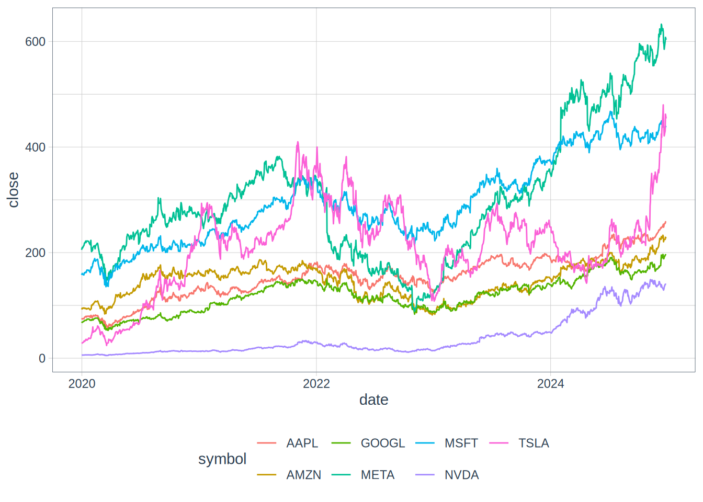

# Load the libraries that are going to be used
library(tidyverse) # To help with out data frame management and manipulation.
library(tidyquant) # this will help us gather the closing stock prices. If I knew then what I know now…
The year was 2013. I was fresh out of college and like any 21 year old with little money and even fewer responsibilities, I wanted to immediately plow what limited funds I had to my name into the stock market in hopes of making some extra money.
From what I remember of those days- NFLX was a popular name. The company was rapidly gaining subscribers as it continued to transition from DVD rentals to streaming services. Following the death of Steve Jobs in 2011, AAPL had since released the iPhone 5 and speculation was swirling that the company was working on smart watch, which would later be released as the Apple Watch in 2015. Windows users were still complaining about Windows 8 as MSFT focused on hardware with its release of the Surface Pro. AMZN was becoming more of a household name for online shoppers and Amazon Web Services began to be a name you would hear at work. META was still known as Facebook at the time and was just a place to post memes to friends and family online. Following its post IPO plunge in 2012, ad revenues were starting to pick up for the company. TSLA was beginning work on a “Gigafactory” following the success of the Model S and NVDA created graphics cards for our souped up gaming PCs.
With 2024 finally wrapping up, it is astonishing to look at many of these companies now and observe much they have changed over the last decade. Rather than distinct words like “car company” or “search engine” or “social network” being associated with these companies, we cannot talk about these companies without using shared buzzwords like Clusters, Large Language Models, Silicon Chips, and Artificial Intelligence.
For much of 2023 and 2024 market returns have seemingly been concentrated in a handful of technology companies, particularly those focused on artificial intelligence. As a thought experiment, I thought it would be interesting to see what the sweet the gains would have been like if I was able to jump into a time machine and purchase these stocks on the best day (lowest price) since 2013. For added fun, (and as an illustration of my luck), I also wanted to see what the largest losses would be if I had purchased the stock right before it had its worst draw down over the period and then sold at the low.
To set this up this scenario, we are going to look at the stocks that make up the Bloomberg Magnificent 7 - AAPL, AMZN, GOOGL, META, MSFT, NVDA, TSLA. We are going to find the highest and lowest amount of profits that could have been made if I purchased a stock at one close price and sold it at another close price (a total of 2 transactions). Lets assume that I cannot sell a stock before it has been purchased and stock can be bought and sold on the same day (resulting in a profit of $0).
First, lets load the libraries that we are going to be using to conduct our analysis.
Next, we will define a vector called stock_symbols and place the tickers for the companies that we are interested in looking at. The symbols I have chosen make up the Bloomberg Magnificent 7.
After the tickers are defined, we pass these tickers through tidyquant’s built in tq_get() function, which will pull the daily volume and open, high, low, close, and adjusted stock prices for each of the symbols we defined. I am only interested in the closing price for each ticker, so I will use the select() function to extract the symbol, date, and close columns from the pulled data. Lets take a look at the first 10 rows to make sure we have the data we are looking for.
# Define the stock symbols.
stock_symbols <- c("AAPL", "AMZN", "GOOGL", "META", "MSFT", "NVDA", "TSLA")
# Get the prices from yahoo finance using tidyquant
stock_prices <- tq_get(stock_symbols, get = "stock.prices", from = "2019-12-31", to = "2024-12-27") %>% select(symbol, date, close)
# Show the stock prices
head(stock_prices, 10)# A tibble: 10 × 3
symbol date close
<chr> <date> <dbl>
1 AAPL 2019-12-31 73.4
2 AAPL 2020-01-02 75.1
3 AAPL 2020-01-03 74.4
4 AAPL 2020-01-06 74.9
5 AAPL 2020-01-07 74.6
6 AAPL 2020-01-08 75.8
7 AAPL 2020-01-09 77.4
8 AAPL 2020-01-10 77.6
9 AAPL 2020-01-13 79.2
10 AAPL 2020-01-14 78.2Next, let’s visualize the price data over time. We will use ggplot (built into the tidyquant library).
theme_set(theme_tq())
ggplot(stock_prices, aes(date, close, color = symbol)) +
geom_line() +
theme_tq()
From the chart, it looks like there was a good amount of variance in 2020 following the 2020 global pandemic and the 2022 market downturn on the back of 40-year-high inflation that prompted the Federal Reserve to raise interest rates at the fasted rate in history. Next, we will use the cummax() and cummin() functions for each symbol to discover the highest and lowest future prices for each date.
stock_prices %>%
arrange(symbol, desc(date)) %>%
group_by(symbol) %>%
mutate(highest_future = cummax(close),
lowest_future = cummin(close))# A tibble: 8,792 × 5
# Groups: symbol [7]
symbol date close highest_future lowest_future
<chr> <date> <dbl> <dbl> <dbl>
1 AAPL 2024-12-26 259. 259. 259.
2 AAPL 2024-12-24 258. 259. 258.
3 AAPL 2024-12-23 255. 259. 255.
4 AAPL 2024-12-20 254. 259. 254.
5 AAPL 2024-12-19 250. 259. 250.
6 AAPL 2024-12-18 248. 259. 248.
7 AAPL 2024-12-17 253. 259. 248.
8 AAPL 2024-12-16 251. 259. 248.
9 AAPL 2024-12-13 248. 259. 248.
10 AAPL 2024-12-12 248. 259. 248.
# ℹ 8,782 more rowsTo better understand the functions and the data in the table - lets look at the 10th row within the table. The closing price of AAPL on 12-12-2024 was $247.96 and what the lowest for the last 10 market days. The highest in the future was $259.02, meaning that if you had purchased AAPL on 12-12-2024, you would have gained over $11 per share with no draw down on your position over the last 10 market days.
By finding the largest/smallest difference between each day’s price and the highest/lowest future price, we can calculate the highest possible gain and largest possible loss per share over the time period assuming one purchase and one sale.
stock_prices %>%
arrange(symbol, desc(date)) %>%
group_by(symbol) %>%
summarize(highest_gain = max(cummax(close) - close),
biggest_loss = min(cummin(close) - close))# A tibble: 7 × 3
symbol highest_gain biggest_loss
<chr> <dbl> <dbl>
1 AAPL 203. -57.0
2 AMZN 151. -105.
3 GOOGL 144. -66.4
4 META 544. -293.
5 MSFT 332. -129.
6 NVDA 144. -36.7
7 TSLA 456. -302. Lets add a variation…
Now lets add some variation to our analysis. When looking back at our biggest winners and biggest losers, we often kick ourselves for not holding on a bit longer - we either left money on the table or we took a larger loss by not staying put. I believe it was the Bitcoiners who coined the term “HODL” (Hold on for dear life). What if we change the parameters of our analysis so that we have to hold the stock for at least 1 year or about 252 trading days before selling? Does this change our results?
# Separated into a mutate and a summarize just for the sake of clarity
stock_prices %>%
arrange(symbol, desc(date)) %>%
group_by(symbol) %>%
mutate(highest_future = lag(cummax(close), 252),
lowest_future = lag(cummin(close), 252)) %>%
summarize(highest_gain = max(highest_future - close, na.rm = TRUE),
biggest_loss = min(lowest_future - close, na.rm = TRUE))# A tibble: 7 × 3
symbol highest_gain biggest_loss
<chr> <dbl> <dbl>
1 AAPL 203. -57.0
2 AMZN 151. -105.
3 GOOGL 144. -64.6
4 META 544. -293.
5 MSFT 332. -121.
6 NVDA 144. -19.3
7 TSLA 456. -302. As we can see from our revised table, the largest possible gains for each of the tickers does not change (probably as expected). Over this time frame, the losses really only change marginally - these stocks have been growing over time - especially in 2023 and 2024.